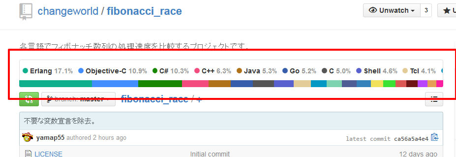

<!doctype html>
<html lang="ja">

	<head>
		<meta charset="utf-8">

		<title>Fibonacci Race</title>

		<meta name="description" content="fibonacci race.">
		<meta name="author" content="team 4">

		<meta name="apple-mobile-web-app-capable" content="yes" />
		<meta name="apple-mobile-web-app-status-bar-style" content="black-translucent" />

		<meta name="viewport" content="width=device-width, initial-scale=1.0, maximum-scale=1.0, user-scalable=no">
		<script src="src/js/jquery-2.1.1.min.js"></script>
		<script src="src/js/Chart.min.js"></script>

		<link rel="stylesheet" href="src/css/reveal.min.css">
		<link rel="stylesheet" href="src/css/theme/default.css" id="theme">

		<!-- For syntax highlighting -->
		<link rel="stylesheet" href="src/lib/css/zenburn.css">
		<!-- If the query includes 'print-pdf', include the PDF print sheet -->
<!--
		<script>
			if( window.location.search.match( /print-pdf/gi ) ) {
				var link = document.createElement( 'link' );
				link.rel = 'stylesheet';
				link.type = 'text/css';
				link.href = 'css/print/pdf.css';
				document.getElementsByTagName( 'head' )[0].appendChild( link );
			}
		</script>
-->
		<!--[if lt IE 9]>
		<script src="lib/js/html5shiv.js"></script>
		<![endif]-->
	</head>

	<body>
		<div class="reveal">
			<div class="slides">
<!--<section data-markdown="./md/firstpage.md"-->
<section data-markdown
    data-separator="\n---\n$"
    data-vertical="\n--\n">
    <script type="text/template">
## Fibonacci Race
<br>
#### <span class="navigate-right">チーム4</span>

---

#### チームハッカソン
- コンセプト
 - 普段一緒に仕事をしない人と交流する
 - <span style="color : red">馴染みのない技術に触れて刺激を受ける</span>
 - 普段の業務ではやれないことをやる

---

#### こんな感じ
- チームメンバーの得意なプログラム言語がバラバラ。
- ならば色々やればいいじゃない？
- 比較する？
- それだ！

---

複数の言語でフィボナッチ数列の処理速度を比較してみました。

---

比較した言語。

---

#### 比較言語
- C
- Clojure
- C++
- C#

--

- Erlang
- F#
- Go
- Groovy

--

- Java
- JavaScript
- Lua
- Objective-C

--

- OCaml
- PHP
- Perl
- Ruby
- Scala

--

- Bash
- TCL
- Python V2
- Python V3
- なでしこ

--

<!-- TODO -->
### 合計 XX 言語！

---



---

### 計測方法
- CodeEval
 - https://www.codeeval.com/
- Microsoft Azure（Windows）
 - Measure-Command { 実行コマンド }
- Microsoft Azure（Linux）
 - time 実行コマンド

---

  <table>
    <thead>
      <tr>
        <th align="center">Language</th>
        <th align="right">TIME, MS</th>
        <th align="right">MEMORY, BYTES</th>
      </tr>
    </thead>
    <tbody>
      <tr>
        <td align="center">Ruby</td>
        <td align="right">106</td>
        <td align="right">2510848</td>
      </tr>
      <tr>
        <td align="center">Scala</td>
        <td align="right">1222</td>
        <td align="right">1679360</td>
      </tr>
      <tr>
        <td align="center">C#</td>
        <td align="right">158</td>
        <td align="right">4853760</td>
      </tr>
      <tr>
        <td align="center">Java</td>
        <td align="right">390</td>
        <td align="right">3616768</td>
      </tr>
      <tr>
        <td align="center">JavaScript</td>
        <td align="right">159</td>
        <td align="right">5439488</td>
      </tr>
      <tr>
        <td align="center">Lua</td>
        <td align="right">33</td>
        <td align="right">4096</td>
      </tr>
    </tbody>
  </table>

--

  <table>
    <thead>
      <tr>
        <th align="center">Language</th>
        <th align="right">TIME, MS</th>
        <th align="right">MEMORY, BYTES</th>
      </tr>
    </thead>
    <tbody>
      <tr>
        <td align="center">Python 2</td>
        <td align="right">149</td>
        <td align="right">3481600</td>
      </tr>
      <tr>
        <td align="center">Python 3</td>
        <td align="right">259</td>
        <td align="right">3866624</td>
      </tr>
      <tr>
        <td align="center">Perl</td>
        <td align="right">68</td>
        <td align="right">1789952</td>
      </tr>
      <tr>
        <td align="center">C</td>
        <td align="right">30</td>
        <td align="right">4096</td>
      </tr>
      <tr>
        <td align="center">Bash</td>
        <td align="right">63</td>
        <td align="right">4096</td>
      </tr>
      <tr>
        <td align="center">PHP</td>
        <td align="right">86</td>
        <td align="right">7004160</td>
      </tr>
      <tr>
        <td align="center">Clojure</td>
        <td align="right">5815</td>
        <td align="right">66879488</td>
      </tr>
      <tr>
        <td align="center">Go</td>
        <td align="right">29</td>
        <td align="right">4096</td>
      </tr>
    </tbody>
  </table>

---

<!-- TODO -->

- <a href="src/graph.html">グラフ</a>
- TODO キャプチャのほうが良い？

---

コードは最速ではありません。<br>
以下のように基本的な再帰で出力する感じです。<br>

```groovy
def input_list = [19,9,2,16,3,8,0,6,4,17,5,1,14,12,15,13,10,7,11,18]
def fib
fib = {n ->
  if (n < 2) {
    return n
  } else {
    return fib(n - 1) + fib(n - 2)
  }
}
input_list.each{println fib(it)}
```

---

以下の様な苦情は受け付けません。

- ○○は最速言語のはずだ！<br>
- ××は△△を使うと1/10になるのに！

---

Githubにまとめてありますので、興味ある方は確認及び追加してみてください！

https://github.com/changeworld/fibonacci_race

---

## ご静聴ありがとうございました。

    </script>
</sectin>
			</div>

		</div>

		<script src="src/lib/js/head.min.js"></script>
		<script src="src/js/reveal.min.js"></script>

		<script>

			// Full list of configuration options available here:
			// https://github.com/hakimel/reveal.js#configuration
			Reveal.initialize({
				controls: true,
				progress: true,
				history: true,
				center: true,

				theme: Reveal.getQueryHash().theme, // available themes are in /css/theme
				transition: Reveal.getQueryHash().transition || 'default', // default/cube/page/concave/zoom/linear/fade/none

				// Parallax scrolling
				// parallaxBackgroundImage: 'https://s3.amazonaws.com/hakim-static/reveal-js/reveal-parallax-1.jpg',
				// parallaxBackgroundSize: '2100px 900px',

				// Optional libraries used to extend on reveal.js
				dependencies: [
					{ src: 'src/lib/js/classList.js', condition: function() { return !document.body.classList; } },
					{ src: 'src/plugin/markdown/marked.js', condition: function() { return !!document.querySelector( '[data-markdown]' ); } },
					{ src: 'src/plugin/markdown/markdown.js', condition: function() { return !!document.querySelector( '[data-markdown]' ); } },
					{ src: 'src/plugin/highlight/highlight.js', async: true, callback: function() { hljs.initHighlightingOnLoad(); } },
					{ src: 'src/plugin/zoom-js/zoom.js', async: true, condition: function() { return !!document.body.classList; } },
					{ src: 'src/plugin/notes/notes.js', async: true, condition: function() { return !!document.body.classList; } }
				]
			});

		</script>

	</body>
</html>
